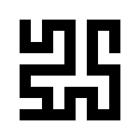

Maze
Draw a labyrinth
Width
Horizontal width of cells pixels
name: x
type: int
default: 16
minimum: 1
maximum: +inf
ui-minimum: 1
ui-maximum: 256
ui-gamma: 1.50
ui-step-small: 1
ui-step-big: 10
unit:pixel-distance
axis:x
Height
Vertical width of cells pixels
name: y
type: int
default: 16
minimum: 1
maximum: +inf
ui-minimum: 1
ui-maximum: 256
ui-gamma: 1.50
ui-step-small: 1
ui-step-big: 10
unit:pixel-distance
axis:y
Algorithm type
Maze algorithm type
name: algorithm-type
type: enum
Tileable
name: tileable
type: boolean
default: False
Random seed
name: seed
type: seed
default: 0
minimum: 0
maximum: +inf
Foreground Color
The foreground color
name: fg-color
type: color
default: rgb(0.0000, 0.0000, 0.0000)
role:color-primary
Background Color
The background color
name: bg-color
type: color
default: rgb(1.0000, 1.0000, 1.0000)
role:color-secondary
pads: input output
parent-class: GeglOperationAreaFilter
categories: render
source: operations/common-gpl3+/maze.c
position-dependent: true
license: GPL3+
 This page is part of the online GEGL Documentation, GEGL is a data flow based image processing library/framework, made to fuel GIMPs high-bit depth non-destructive editing future.
This page is part of the online GEGL Documentation, GEGL is a data flow based image processing library/framework, made to fuel GIMPs high-bit depth non-destructive editing future.